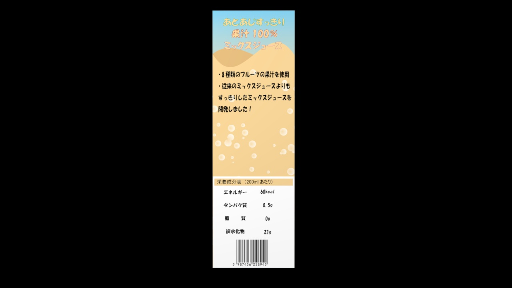
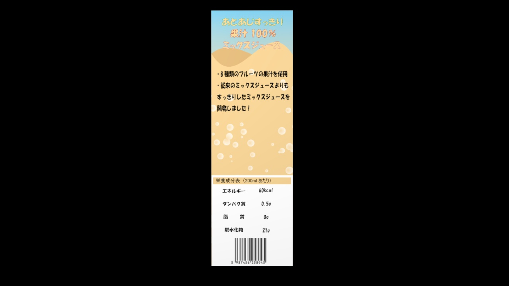

自己紹介
こんにちは、私はコウヤ ショウキロウです。
独学でデザインや映像の研究と勉強をしながら、大学の実践科目で商品パッケージとパンフレットの制作を行っています。
現在は、AdobeのAfter Effects、Photoshop、Illustratorを用いて、将来仕事として依頼を受けた際にクライアントの要求に完璧に答えることができるように、日々スキルを磨いています。
自分の強みは、デザインを本気で楽しんで行えることと、様々な作品や製品を研究して、自分の技術として取り組もうとする好奇心と向上心です。
また、将来は常にクライアントとの綿密なコミュニケーションを行うことで、ニーズを理解し、期待を超えるデザインを提供することができるクリエイターを目指しています。
このポートフォリオでは、これまで作品やプロジェクト紹介しています。
プロジェクト
CDパッケージのデザイン案
短期大学の授業内での制作作品。依頼者をクラスメイトに担当していただき、クライアントとクリエイターとの関係を想定した制作を行った。フリー素材禁止というルールの中、クライアントの要望に完璧に沿うように、女の子を自分が演じ、シルエット調にするなどの工夫を行いできた作品である。
依頼書に書かれていた、POPな感じや暴れている感じなどの抽象的な表現を自分なりの解釈に落とし込み、アイドルらしい暴れ方やPOPな感じを演出した。
先述した通り、女の子の素材は自分でポーズを演じ、シルエット調にした。また、ビールやお肉などのリアルな画像で用意するのが難しかったものは、洗剤や入浴剤、干し肉などで代用し、ぼかしをかけることでディテールが気にならないようにした。また、夏の浜辺を春にどう用意するかという問題もあったが、バックは絵を活用し表面はあえて夕方に写真を撮り、Photoshopで加工することにより夏との差異を少なくした。


CDパッケージデザインの3Dモデリング動画
フルーツミックスジュースパッケージ
新しい商品のデザイン案を考え、ターゲットマーケティングから素材の用意、成分表の構想までを行いました。3DCGでのモデリングを通じてパンフレットも制作しました。


 
